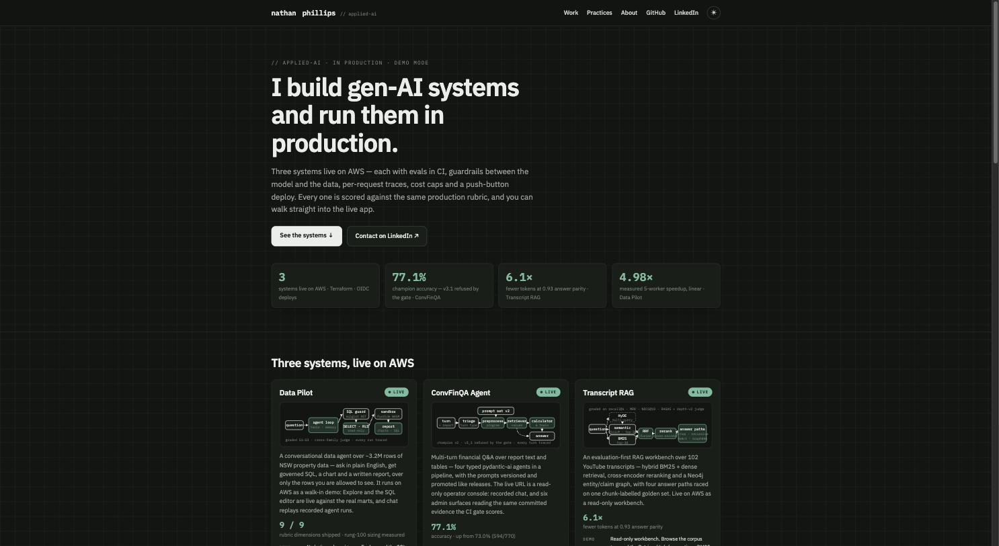
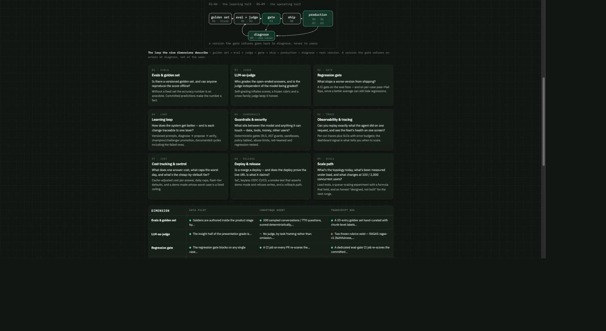
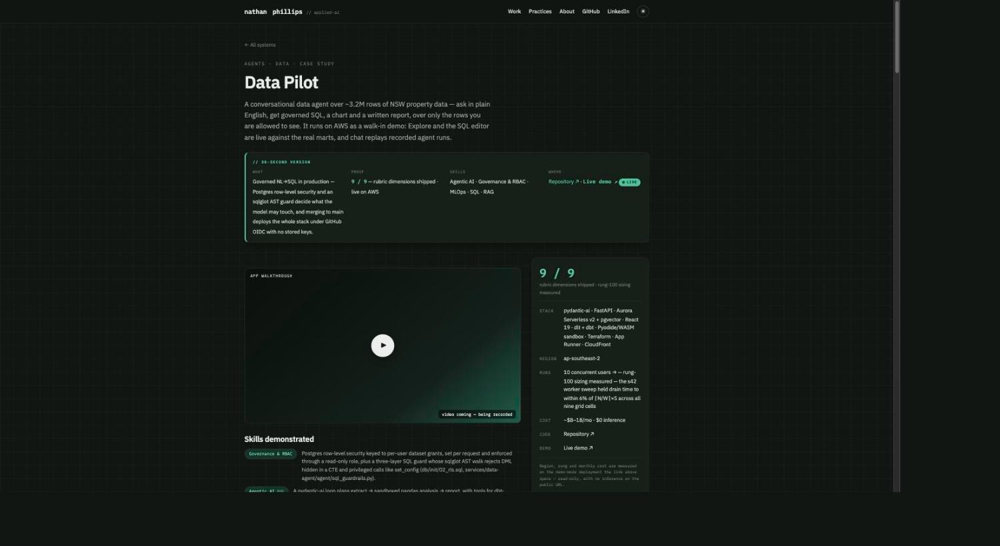
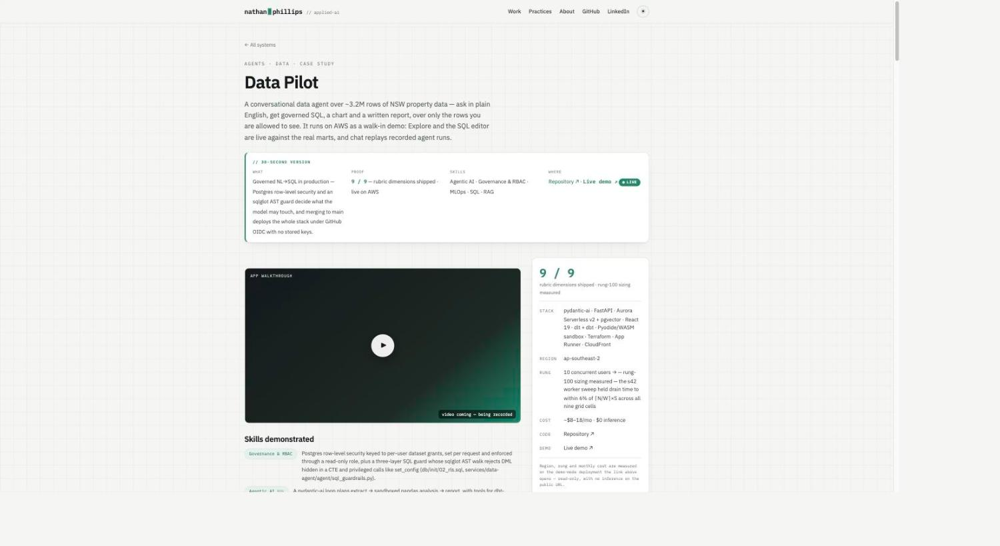
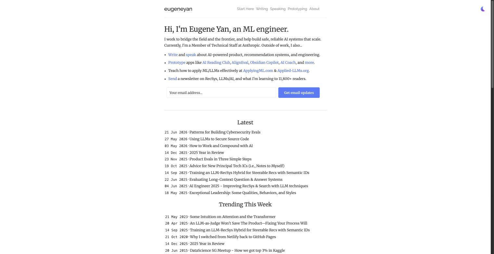
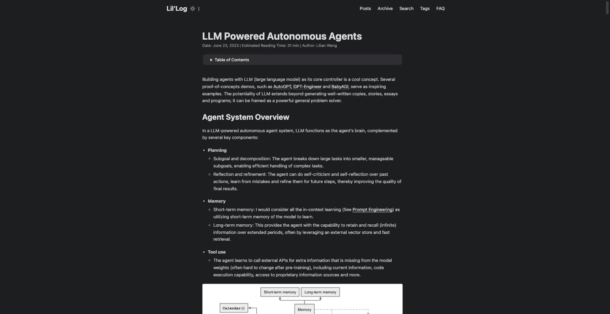
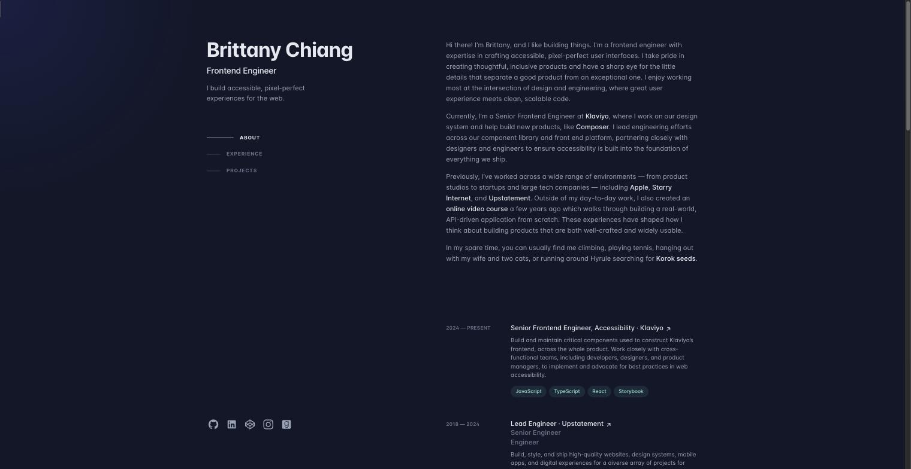
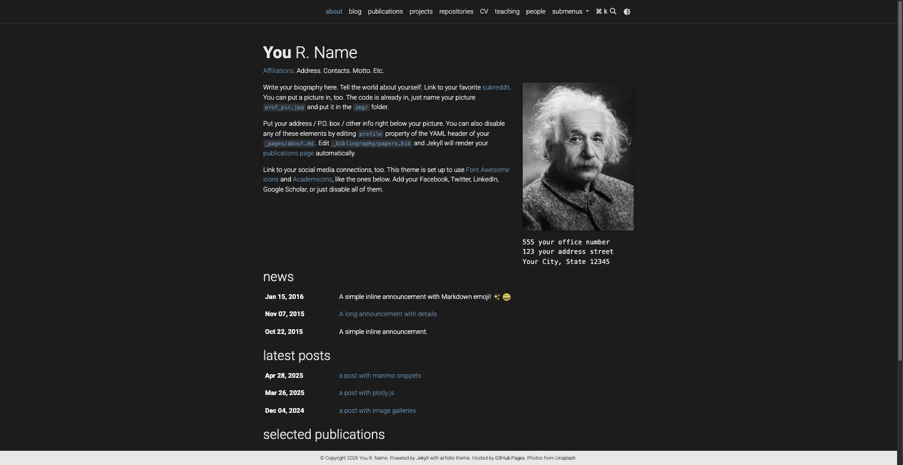
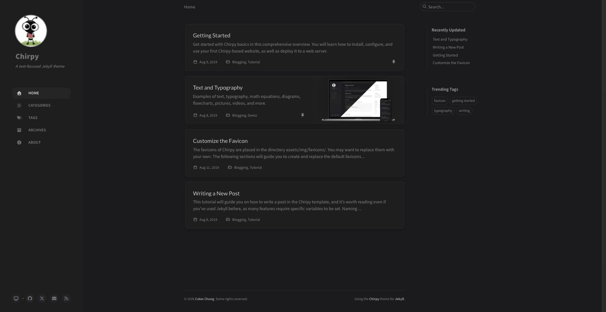

nmp-dsci.github.io · design evaluation · branch design-evaluation · measured 30 Aug 2026
The content is the strongest thing on the page — proofs, file paths, a scorecard that admits what isn't built. The design works against it: 39 distinct text styles on the home page, most running text at 12.5px or smaller, a light theme that fails WCAG AA on roughly ten label classes, ~30 identical bordered panels with no hierarchy between them, and case studies where the first numbered section starts two full screens down and paragraphs run to 151 words with no lists, tables or map. A hiring manager scanning for 60–90 seconds is not getting what you built.
Twenty saved transcripts in transcript-rag-agent (≈182k words: Sam Crawford, Envato Tuts+, Self-Made Web Designer ×5, Chris Raroque ×2, Ras Mic ×2, Codex ×2, Jono Catliff, Yashica Jain, Mikey, AI Foundations, Jack Roberts, Viktor Oddy, DesignCode) were digested into rules with timestamps; 71 web sources (NN/g, WCAG 2.2, Butterick, Baymard, web.dev, hiring-manager surveys, exemplar portfolios) were added; the live site was measured with DOM/contrast probes and screenshots at 1440px in both themes.
The seven-section spine, the nine-dimension rubric, the honest ●/◐/○ ratings, the inline SVG diagrams (bespoke, un-one-shottable — exactly the “custom asset” every video says separates a site from AI slop), the lint gate, and IBM Plex as an identity. None of that changes. The redesign is a presentation layer over the same front matter.
Both fix the same root causes: type scale, measure, contrast, spacing rhythm, hierarchy, scan rails, CTA discipline. They differ in how far they move: A keeps the card/hub grammar and Plex; B replaces cards with an editorial index, adds a display serif and sidenotes, and reads like a printed monograph. Both are mocked below in real HTML and scored on the same rubric.
1 · Audit of the live site
Numbers from DOM probes on the production build (master 09893c4), 1440×900, plus computed-colour contrast in both themes.
| Surface | Measured | Threshold (from the rubric) | Read |
|---|---|---|---|
| Home hub | 4,166px tall (4.6 screens) · 1,843 words · 39 distinct text styles · most common leaf style 12.5px · ~77 text nodes under 10px · content column 1080px · rubric explainer alone 1,625px tall | ≤ 8–10 text styles per page · body ≥ 16px · running text ≥ 14px · one “star” | Systemic: no type scale; everything is a same-weight panel |
| System card | 691px tall · title + badge + diagram + 60-word summary + metric + 70-word “Demo” paragraph at 11.5px + “Runs on” row + two buttons; the primary destination (case study) is the ghost button | Card ≤ 1 outcome sentence + 3 facts + 1 solid primary action | Overloaded; wrong button emphasised |
| Case study (Data Pilot) | 8,706px tall (9.7 screens) · 2,730 words in 19 paragraphs, longest 151 words · 0 lists · 0 tables · first H2 at y = 1,772 (two screens of crumb/TL;DR/video-placeholder/skills before §1) · 672px column at 15.5px ≈ 84 characters per line · no table of contents, no reading time | CPL 45–75 (target 66–68ch) · paragraphs ≤ 80 words · TOC on pages > 1,200 words · §1 within 1 screen | Built for reading, delivered for scanning — and fails both |
| Contrast — light | --faint #77837A on paper = 3.64:1 (fails AA 4.5) at 9.5–12px on kicker, tl;dr labels, fact keys, figcaptions, proof paths, rung states, matrix hint · --signal #17876B = 4.10:1 (fails at 11–15.5px: links, status glyphs, rr-score) · amber 3.89:1 · white-on-green live badge ≈ 4.1:1 | 4.5:1 normal text, 3:1 large/UI — both themes | ≈ 12 classes fail in the default theme |
| Contrast — dark | --faint 4.46:1 on bg, 4.10:1 on panels (fails on every card); body 11.2:1 fine | same | Borderline on bg, fails on panels |
| Colour use | Signal green carries links, metric numbers, live badge, status glyphs, diagram highlights, section rules, wordmark cursor, chip text and buttons | 60/30/10 — accent reserved for the action and status | Accent means nothing because it means everything |
| Spacing | Section paddings 54 / 62 / 76 / 90px; card paddings 14 / 15 / 16 / 18px; radii 8 / 9 / 10 / 11 / 12px; 34px grid-line background on both themes | One 4/8-pt ladder; one radius; one section rhythm | Hand-tuned, not a system |
| About | 498 words, 760px column, four H2s, no image, no terminal action | Who / what / proof / next step | Plain but serviceable |
| Global | Google Fonts CSS with 7 weights, render-blocking; blinking-cursor wordmark; hover on links has no transition; no styled :focus-visible except the matrix; no overflow at 360–1600 (good) | ≤ 4 weights, self-hosted subset, focus ring, 300ms transitions | Hygiene items |




Sizes were chosen per element (9.5, 10, 10.5, 11, 11.5, 12, 12.5, 13, 13.5, 14, 14.5, 15, 15.5, 16, 17.5…). Tuts+ and Codex both put a named base × ratio scale first; without it, hierarchy cannot exist.
Letter-spaced uppercase mono at ≤12px is the site's only label idiom, used for kickers, keys, badges, captions, hints, states and paths. It is the one thing that makes it look “engineered”, and it is also why everything looks the same.
Metrics, cards, rubric dims, matrix, rungs, practices, TL;DR, facts, scorecard rows: ~30 bordered panels with one radius, one border, one shadow. Equal weight = nothing is read (Crawford 21:02).
The light palette was tuned by eye. Three of five neutral steps and the accent fail AA at the sizes they are used. “Just because it looks clear to you doesn't mean it passes” (Self-Made Web Designer, 17:14).
TL;DR + placeholder video + seven skill proofs before the work; then 2,700 words of prose with no map. NN/g: readers get through ≤ 28% of the words; there is no path that rewards the 28%.
Green is links, numbers, status, badge, diagrams, cursor, chips and buttons. Every video's colour rule is the same: the accent points at the action. Here it points everywhere.
2 · What your saved corpus and the research agree on
Each rule below appears in at least two of the twenty transcripts or is a numeric standard from WCAG / typography research. These are the rubric's thresholds; the digests (with timestamps) are in the session scratchpad.
<details> for depth.prefers-reduced-motion. No scroll-jacking, no autoplay video, no 3D hero for this audience.font-display chosen for CLS.Plex Sans Variable exists; Latin subset of Sans + Serif + Mono ≈ 90KB.3 · Who does this well
Eleven personal sites (most on *.github.io or static generators) and nine Jekyll themes, every URL fetched and confirmed on 31 Aug 2026. The point is not to adopt any of them — it's that each one has already solved one of this redesign's problems, and the two hardest pieces (a scroll-spy TOC, a three-state theme toggle) exist as ~200 lines of readable open source.

source: line. This is Option A's proof-strip and evidence pattern, already working for an ML engineer at Anthropic.



Every page opens with a metadata block carrying created/updated dates and explicit confidence and importance ratings — the nearest thing on the web to this site's production-readiness scorecard, and proof that publishing your own uncertainty reads as authority. Sidenotes attach evidence to the sentence that needs it (Option B's model). Caveat: its density would overwhelm a 90-second skim — borrow the metadata block, not the maximalism. gwern.net ↗
| Site | Stack | Steal this | Caveat |
|---|---|---|---|
| eugeneyan.com | static / GitHub Pages-style | "Start Here" nav item; credibility counters as plain numbers; figures with a source: line; H2/H3 question rhythm ("Why X? · How to apply X?") | No dark mode; emoji tags would read unserious here |
| lilianweng.github.io | Hugo + PaperMod · gh-pages | Index metadata (title · date · reading time · excerpt); collapsible TOC; long-form pacing | Stock theme — zero identity to learn from |
| brittanychiang.com · v4 repo | Next.js (v4: Gatsby, 8.3k★) | Anchor-linked scroll-spy rail; ~6-token palette; "Skip to content"; a11y-first markup | Résumé-shaped: projects are teasers, not case studies |
| rauno.me | Next.js, hand-crafted | Named collections (Craft / Field Notes / Projects) with a distinct promise each; copy-email micro-interaction | The polish budget is the aesthetic; copying the layout alone reads empty |
| maggieappleton.com | Astro | Content typed by epistemic status (Essays vs Notes vs Patterns), each defined on the index — a cousin of shipped/partial/designed | Depends entirely on custom illustration |
| vickiboykis.com | Hugo "Bear" | Radically plain dated index back to 2015; ~40-tag taxonomy as a second axis | Nothing for metrics or scorecards |
| danluu.com | hand-written HTML | The performance bar: no images, no JS, one flat index — credibility through cost | Steal the budget, not the (absent) typography |
| jalammar.github.io | Jekyll · gh-pages | Diagram-first posts on a *.github.io Jekyll site that became the field's most-cited explainer — the direct precedent for the inline-SVG bet | Otherwise default theme |
| huyenchip.com | static | Claims stated with evidence inline ("most read book on the O'Reilly platform in 2025"); nav split by artefact type | Visually plain wall of prose |
| karpathy.github.io | Jekyll · gh-pages | Longevity and consistency beat redesigns: one dated index, 2011→2026, still authoritative | Jekyll default; no tokens/dark/project layout |
| gwern.net | Pandoc → HTML | Per-page confidence/importance metadata block; sidenotes; selective typographic detail; floating dark-mode toggle | Idiosyncratic density — wrong register for a 90-second skim |
| Theme | ★ | What it does well | Verdict for this site |
|---|---|---|---|
| al-folio · repo | 16.1k | Token-driven light/dark with system detection; projects/news collections; Distill-style posts; Mermaid/MathJax; Lighthouse 94/97 | Steal the collections model + theme mechanics; academic framing is wrong |
| academicpages · repo | 17.5k | Portfolio/talks/publications as ready-made collections; markdown generated from TSV | Steal only the "portfolio item = collection entry" data model (this site already does) |
| Minimal Mistakes · repo | 13.6k | Layout taxonomy: splash / single / archive / search; 11 skins; breadcrumbs | Steal the layout taxonomy; dark mode is a build-time skin, not runtime tokens — a real weakness |
| Chirpy · repo | 10.2k | Best free scroll-spy TOC; Light/Dark/System three-state toggle on custom properties; dark-mode image swapping; last-modified dates | Steal the TOC and the three-state toggle wholesale — ~200 lines each |
| Just the Docs · repo | 9.1k | Documentation-grade left nav + search; explicit typography scale; near-zero dependencies | Steal the typography scale and nav model — the strongest long-form reading kit of the set |
| TeXt · repo | 3.3k | Six skins incl. dark; TOC; Mermaid; semantic responsive HTML | Skin-variable structure worth reading; card aesthetic dated |
| Hydejack · repo | 1.6k | Works with JS disabled; smooth page transitions; strong PageSpeed | Don't adopt — portfolio/TOC/dark mode live in the $79 PRO tier; steal the no-JS baseline standard |
| portfolYOU · repo | 1.2k | Project cards + blog in one MIT theme, gh-pages native, dark mode | Closest off-the-shelf shape, but Bootstrap-generic — steal the project-card schema only |
| gradfolio · repo | 331 | Tiny surface area; dark mode respecting system preference | The best minimal dark-mode code to read before writing P0's toggle |
① The index is a dense, dated, scannable text surface — never hero + card-grid spectacle (danluu, karpathy, vickiboykis; eugeneyan adds the one upgrade: a curated entry point above the chronology). ② Long-form pages carry navigation furniture and inline evidence — scroll-spy TOC, reading time, captioned figures with sources, per-page metadata blocks. ③ One restrained token system applied in both themes, on a Dan-Luu-grade performance budget. The redesign plan already encodes all three; these sites are the proof they work in the wild.
Home/index → eugeneyan.com: curated "Start Here" (here: the rubric matrix), dated list of systems, plain-number proof. Case study → gwern.net's metadata block + lilianweng's TOC (Option A), or gwern's sidenotes proper (Option B). Card/collection model → al-folio, which this site's `_projects` collection already mirrors.
P0: read gradfolio's toggle + Chirpy's three-state switch before writing tokens.css. P3: Chirpy's TOC and lilianweng's byline are the reference implementations for study.js; eugeneyan's source: caption convention becomes the figure-caption lint rule. Verdict unchanged: no template adoption — the seven-section spine and scorecard are already a stronger content model than any theme ships.
4 · The rubric
Structure mirrors the site's own production rubric and Nielsen's severity scale: each dimension scored 0–5 (5 exemplary · 4 meets every threshold · 3 mostly · 2 visible failures · 1 systemic · 0 absent), multiplied by a weight of 1–3. Maximum weighted score 145. Applies to every surface: home hub, system card, case study, practice page, about, and the global chrome (nav, footer, tokens, themes).
| # | Dimension | W | Pass threshold (score 4) | Surfaces where it bites hardest |
|---|
Weights: 3 for the dimensions the hiring research and the corpus name as decisive (clarity, hierarchy, type, colour, scan-ability, evidence); 2 for craft and structure; 1 for motion, which every source for this audience says to minimise.
5 · Current site, scored
| Dimension | W | Score | Evidence |
|---|---|---|---|
| Weighted total | |||
Same 0–5 scale, current site only, for the six dimensions that vary most by surface. Global chrome (nav, footer, tokens, themes) is scored in the table above under D4, D9, D11, D12.
| Surface | D1 Clarity | D2 Hierarchy | D3 Type | D6 Scan | D7 Evidence | D8 CTA | Biggest fix |
|---|---|---|---|---|---|---|---|
| Home hub | 3 | 2 | 1 | 2 | 3 | 3 | Make the matrix the star; collapse nine cards to a numbered list; give metrics their baseline |
| System card | 3 | 2 | 1 | 2 | 4 | 2 | One outcome sentence + three facts; solid “Case study”, quiet “Live demo” |
| Case study | 2 | 2 | 2 | 1 | 4 | 3 | §1 within one screen; TOC + reading time; 68ch serif body; one-line section summaries; lists/tables; skills to the end |
| Practice page | 3 | 2 | 2 | 2 | 4 | 2 | Same reading template as the case study; terminal CTA to the systems it applies to |
| About | 3 | 3 | 3 | 3 | 3 | 2 | Who / what / proof / contact in one screen; optional photo; the “what I work with” list as the second screen |
6 · Option A
Keeps IBM Plex and the green-on-paper identity, but rebuilds it on tokens: Plex Sans for display and UI, Plex Serif for reading, Plex Mono only for numbers, code and paths. One 4/8-pt spacing ladder, one radius, one shadow. Cards lose their borders and sit on a tinted band. The nine-by-three rubric matrix becomes the hero's right-hand “star”, so evidence is in the first viewport. Case studies get a sticky section map with progress, a one-line summary under every heading, a 68ch serif column, and <details> for proofs and paths.
Structure preserved: home → 3 systems → rubric → ladder → practices; seven-section case-study spine; all front matter; the lint script (extended, not replaced).
text-wrap: balance; paragraphs prettyApplied AI engineer · three systems in production on AWS
Evals in CI, guardrails between the model and the data, per-request traces, cost caps and a push-button deploy — scored honestly against one nine-dimension rubric, with the live app one click away.
Governed natural-language → SQL over 3.2M rows of NSW property data, with row-level security deciding what the model may touch.
Multi-turn financial Q&A through four typed agents, prompts versioned and promoted like releases — the registry refused the auto-generated challenger.
An evaluation-first retrieval workbench over 102 YouTube transcripts: eight configurations raced on one golden set; parity at 6.1× fewer tokens.
Applied AI engineer · three systems live on AWS
Evals in CI, guardrails, traces, cost caps, push-button deploy — scored against one rubric.
Governed NL → SQL over 3.2M rows, with row-level security deciding what the model may touch.
Ask in plain English, get one read-only SELECT under Postgres row-level security, a sandboxed analysis and a typed report — over 3.2M rows of NSW property data.
Row-level security + an sqlglot AST guard decide what the model may touch; merge to main deploys the whole stack under GitHub OIDC with no stored keys.
4.98× on 5 workers, linear · 32 goldens, graders G1–G3, cross-family judge · every write on the public URL refused server-side.
Agentic AI · Governance & RBAC · MLOps · SQL · RAG · Evals · Product UI
A data agent is only useful if the people using it can be trusted with the rows it returns — so governance is the product, not a feature.
Data Pilot answers a plain-English question with a chart, a written report and the single governed query that produced them. The user never sees rows they are not entitled to, because entitlement is enforced in Postgres — a per-request app.current_user_id and a read-only role — not in the prompt.
The demo on the public URL runs in read-only mode: Explore and the SQL editor are live against the real marts; chat replays eight recorded agent runs as paced server-sent events, so you can watch the plan → charts → report sequence without an inference bill.
One pydantic-ai loop with four narrow tools; a second, isolated agent only names conversations so it can never add latency to an answer.
The loop plans an extract, writes a single read-only SELECT, runs sandboxed pandas over the rows it gets back, and assembles a typed report…
Both frames are live HTML with container queries — resize the browser and the desktop frame re-lays itself; the 390px frame is the same markup. The mocks reuse the site's real .dia SVG contract so the diagram is the actual Data Pilot include, not a picture of one. Mocks are shown in each option's dark tokens; the “light” button flips to the light palette.
7 · Option B
Treats the site as a published monograph about three systems. Fraunces (variable optical-size serif) for display, Source Serif 4 for reading, JetBrains Mono for data. Cream paper with a brick accent used only for the contact action, section numerals and “partial” status; green is reserved for “shipped”. No cards at all: the home page is a title block, a numbered index of the three systems ruled like a contents page, and the rubric as a full-width ledger table with words rather than glyphs. Case studies are set in a 66ch column with a 240px margin for sidenotes — file paths, figure notes and proof references live beside the sentence they support.
Structure changed: practices become a small-caps list under the ledger; the scale ladder becomes one ruled table row per rung; skills move into the byline.
Applied AI engineer · Sydney · three systems in production
Three agents live on AWS — a governed data agent, a financial Q&A pipeline and a retrieval workbench — each written up on the same seven-section spine and graded against one production rubric. The hollow marks are the point.
Governed natural-language → SQL over 3.2M rows; row-level security decides what the model may touch.
Four typed agents over report text and tables; prompts versioned and promoted like releases.
Eight retrieval configurations raced on one chunk-labelled golden set over 102 transcripts.
Nine questions every gen-AI system should answer before real users touch it. Each cell names what exists; anything that isn't shipped says why in the same line.
| Dimension | Data Pilot | ConvFinQA | Transcript RAG |
|---|---|---|---|
| R1Evals & golden set | shipped32 cases, authored in-productgraders G1–G3 | shipped770 questions, scored deterministically | shipped20-entry chunk-labelled set |
| R2LLM-as-judge | shippedcross-family, refuses own family | n/atask is exact-match by framing | partialself-graded — frozen rubrics existindependence not yet measured |
| R5Guardrails | shippedRLS + sqlglot AST + WASM sandbox | partialabuse controls, no policy gate | partialdeny-by-default boundary only |
| R9Scale path | shippedrung 100 sized from a queue experiment | designedrung 10 only; nothing measured beyond | designedrung 10 only |
| … R3 gate, R4 loop, R6 tracing, R7 cost, R8 release — all shipped on all three | |||
Applied AI engineer · Sydney
Three agents live on AWS, written up on one spine and graded against one rubric.
Governed NL → SQL over 3.2M rows; RLS decides what the model may touch.
Four typed agents; prompts promoted like releases.
Ask in plain English; get one read-only SELECT under row-level security, a sandboxed analysis and a typed report — over 3.2M rows of NSW property data.
A data agent is only useful if the people using it can be trusted with the rows it returns — so governance is the product, not a feature.
Data Pilot answers a plain-English question with a chart, a written report and the single governed query that produced them. The user never sees rows they are not entitled to, because entitlement is enforced in Postgres — a per-request app.current_user_id and a read-only role — not in the prompt.1
The demo on the public URL runs read-only: Explore and the SQL editor are live against the real marts; chat replays eight recorded agent runs as paced server-sent events, so you can watch plan → charts → report without an inference bill.2
One pydantic-ai loop with four narrow tools; a second, isolated agent only names conversations so it can never add latency to an answer.
The loop plans an extract, writes a single read-only SELECT, runs sandboxed pandas over the rows it gets back, and assembles a typed report…3
| Dimension | Status | What exists | § |
|---|---|---|---|
| R1Evals & golden set | shipped | 32 cases across three governed datasets, T1–T7 ladder; graders G1–G3 deterministic | 3 |
| R5Guardrails | shipped | RLS keyed to per-user grants · three-layer sqlglot AST guard · Pyodide sandbox, no network | 5 |
| R9Scale path | shipped | rung 100 sized: drain time within 6% of ⌈N/W⌉×5 across nine grid cells | 6 |
8 · Compare
Option scores are “as designed”: what the mock commits to, assuming the plan below is executed to its acceptance checks. The rationale column says what each option does — or fails to do — for that dimension.
| Dimension | W | Current | A · Field Guide | B · Monograph | Why the difference |
|---|---|---|---|---|---|
| Weighted / 145 |
lint_case_study.py with section-summary and paragraph-length checks; add scripts/contrast_audit.pycontrast_audit.py in CI reads the token file and fails under 4.5:1 for any text pair, both themes#s1…#s7 anchors; TOC is built from them.dia contract unchanged; only token names map (--signal → --accent)assets/img replace them9 · Templates
Tokens are written so the theme toggle is a value swap and every colour pair is machine-checkable. Skeletons are Liquid, targeting the existing collections and front matter; nothing in _projects/*.md changes except an optional sections: summary list. Rendered with @pierre/diffs; the same files sit in the plan's P0–P3.
assets/css/tokens.css — Option A · the whole colour, type and space system in one file; [data-theme=dark] only redefines colour. --faint is 4.6:1 on paper, 5.9:1 on the dark bg; every text/bg pair here passes AA.
assets/css/tokens.css — Option B · same shape, editorial values; brick accent reserved for contact + numerals + partial, green for shipped.
_layouts/home.html skeleton (A) · hero with the matrix as the star, proof strip with baselines, three systems, numbered rubric list, ladder, practices, terminal CTA. The matrix include is the existing rubric-matrix.html re-rendered as a grid.
_layouts/project.html skeleton (A) · header → TL;DR → three columns (TOC · 68ch prose · rail) → scorecard → next/contact. Section summaries come from a new optional front-matter list sections: [ {n: 1, summary: "…"}, … ], injected before each H2 by the same script that adds #s1…#s7.
assets/js/study.js · builds the TOC from the seven H2s, scroll-spies with IntersectionObserver, inserts section summaries, computes reading time. ~40 lines, no dependencies, honours reduced motion.
scripts/contrast_audit.py · reads tokens.css, computes WCAG contrast for every declared text-on-surface pair in both themes, exits non-zero under 4.5:1 (3:1 for the large/UI list). Runs in the existing lint.yml job. Invocation: uv run --no-project python scripts/contrast_audit.py assets/css/tokens.css.
10 · Plan
design-evaluation, each with an acceptance checkOrdered by the corpus's own rule — structure and tokens first, visual direction second, per-element polish last — so nothing is redone when a section moves. Every phase ends with the Docker Jekyll build, the case-study lint, and (from P0) the contrast audit. Written for Option A; B-only deltas are marked.
DESIGN.md: audience (hiring managers, 60–90 s scan), the one action (open a case study → book a conversation), the rubric thresholds from §3, and the never-do list (no ghost primary, no text under 13px, no accent outside CTA/links/status, no grid background, no placeholders for media that doesn't exist, no scroll-jacking, no purple, no Inter).assets/css/tokens.css as above; scripts/contrast_audit.py; wire into .github/workflows/lint.yml.assets/fonts/; font-display: optional for body, swap for display; size-adjust fallbacks. B: Fraunces + Source Serif 4 + JetBrains Mono instead..btn (solid accent) and one .lnk (underlined) — the ghost button is deleted. 300ms ease-out on hover/focus; :focus-visible ring with offset; prefers-reduced-motion zeroes --dur._data/site.yml: outcome-led tagline (≤ 12 words), strapline, and a proof: list of three {n, label, baseline} — lint fails a proof without a baseline.rubric-matrix.html gains mode="grid": words in cells (shipped / partial / designed / n/a), each cell linking to /projects/x/#sN; no tooltips, no truncation. Legend states what each word means.project-card.html: title · live · one outcome sentence (new outcome: field, ≤ 25 words, lint-checked) · diagram · three facts (Score / Demo / Runs on, ≤ 12 words each) · solid “Read the case study”, quiet “Open live demo ↗”. Borderless on the band; hover lift.<ol> of nine one-liners in three columns, plus the loop diagram at figure size; nine cards deleted. Ladder → one horizontal stepper. Practices → three lines._layouts/project.html per the skeleton; assets/js/study.js; readiness-mini.html; next-system.html. Skills demonstrated moves after the scorecard; video/reel placeholders removed — real screenshots from assets/img/<system>/ become Fig 0 in §1 where they exist.headline, proof_line, sections: [{n, summary}]; the case-study skill (.claude/skills/case-study/SKILL.md) and _templates/project.md updated in the same PR.lint_case_study.py adds: paragraph ≤ 80 words, summary per section, outcome ≤ 25 words, proof baseline present, no media placeholders.<span class="fn"> markers, <aside class="side"> rendered from a notes: list; JS moves notes inline under 1100px._layouts/practice.html: same TOC/prose/rail; “Applies to” chips → the rail; terminal CTA to the systems it applies to.about.md + _layouts/page.html: lead paragraph (who, what, where), three proof lines, contact button in the first screen; the “what I work with” list second; optional photo slot (no placeholder if absent).no-mistakes axi run --intent "Redesign: tokens, type scale, hierarchy, scan rails; rubric ≥ 130/145" → PR to master with the before/after score table in the description; merge; verify live.Estimated total: Option A 3–4 sessions; Option B 5–6. The editorial pass on the three case studies (P3) is the only work that is content rather than presentation, and it is shared by both options — it is also the single change with the largest effect on D6 scan-ability, whichever option you choose.
11 · Decide
Select, then press Send to Agent in the Lavish toolbar. You can also annotate any element in the mocks directly — a cell, a heading size, a button — and those come through as ordinary feedback.